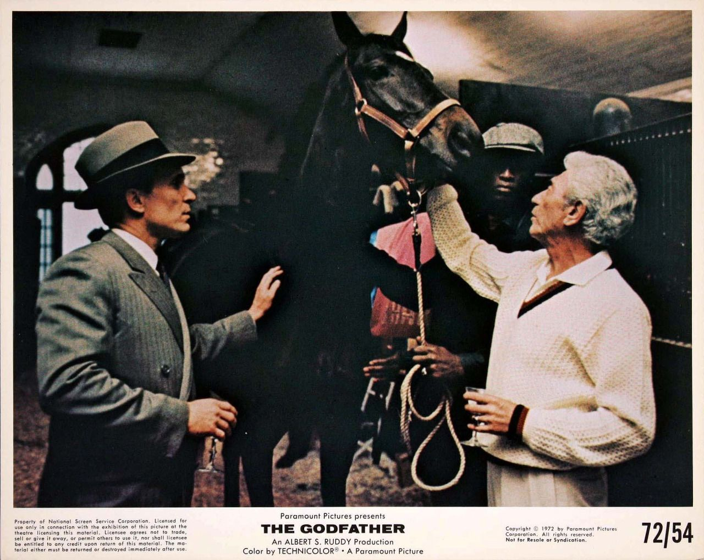
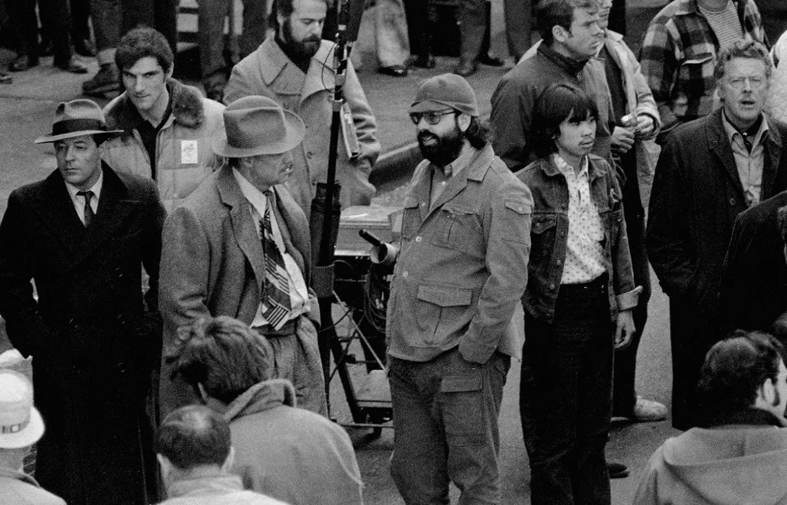
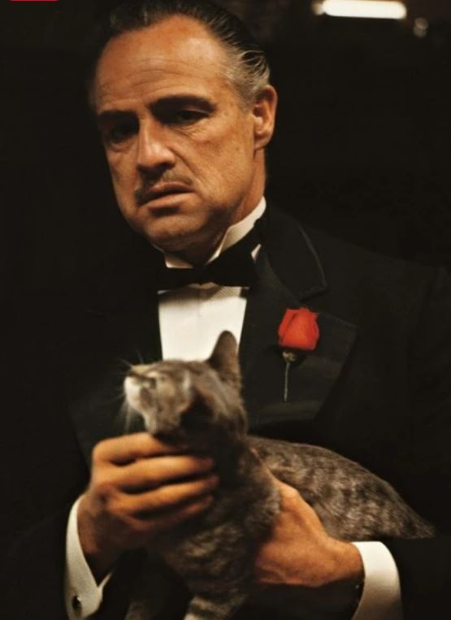

Watch the horse head scene
here! TW: very bloody
The Real Horse Head: One of the most iconic scenes in "The Godfather" is when the character Jack Woltz wakes
up
to find a severed
horse head in his bed. This gruesome moment was based on a real-life event. In 1944, a similar incident occurred
when a film producer named Harry Cohn found a horse head in his bed. The mafia had placed it there as a warning
due to a dispute over the use of a horse in a film. This story served as inspiration for the scene in the movie.

Learn more about how the film was involved with the real mob!
The Mafia's Involvement:
"The Godfather" was made with some involvement from the mafia. The production faced challenges in securing
certain filming locations, and it is believed that organized crime figures helped facilitate access to these
places. Additionally, Frank Sinatra's involvement with the film was reportedly influenced by his connections to
the mafia, as he was a close friend of several mobsters. However, it's essential to note that the extent of
mafia involvement in the film's production remains a topic of debate.

Watch the scene here!
Don's Cat Purring Too Loud:
In the opening scene of "The Godfather," Don Vito Corleone (played by Marlon Brando) is seen stroking a cat
while listening to requests from people seeking his assistance. The cat's loud purring was not scripted; it
happened spontaneously on set. Director Francis Ford Coppola liked the sound, so he kept it in the final cut of
the film. The cat's purring added an eerie and unsettling atmosphere to the scene, emphasizing the power and
control of the character.